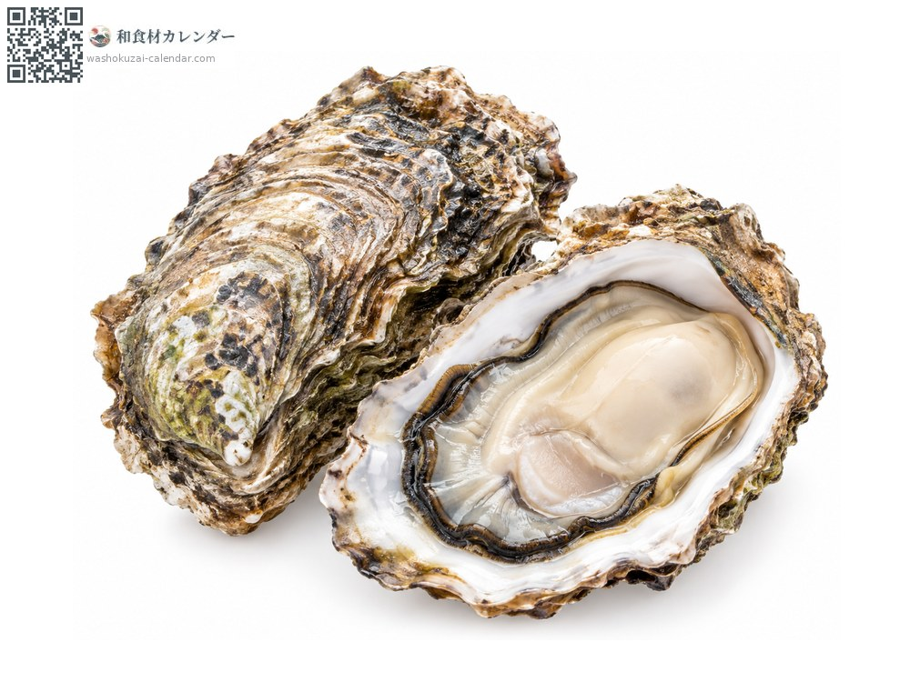
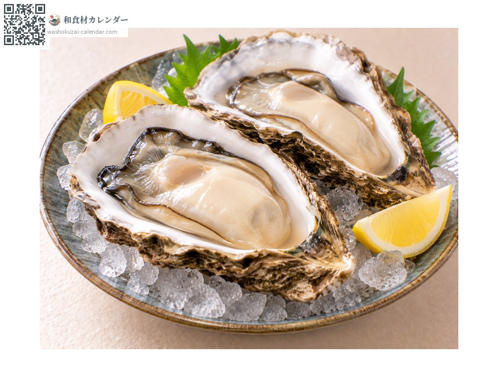
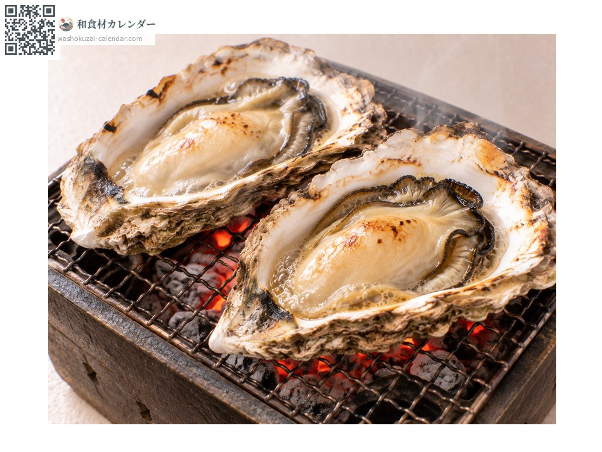
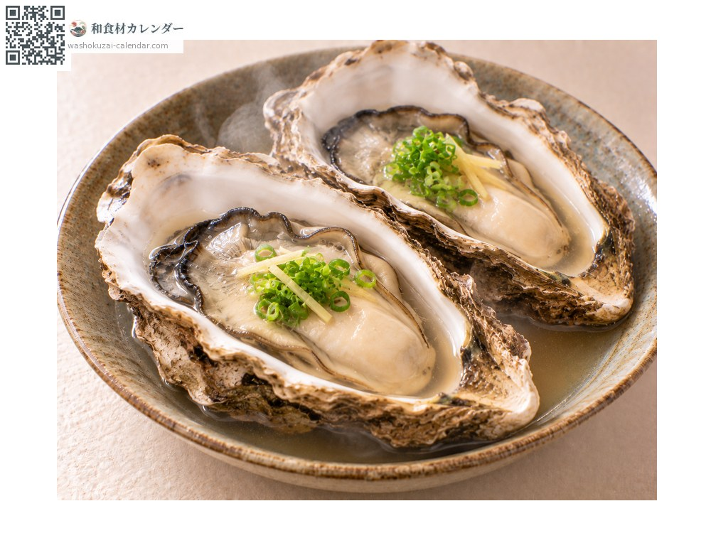
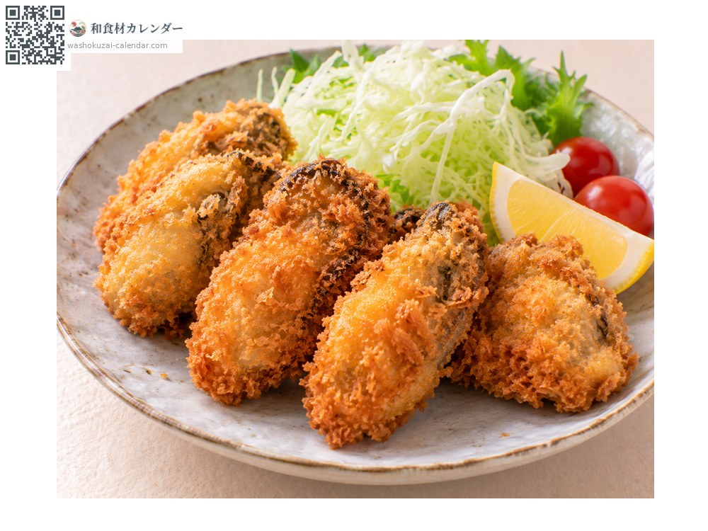

อาหารทะเล
หอยนางรมหิน
岩牡蠣 いわがき
อร่อยที่สุดในเดือน มิ.ย., ก.ค., ส.ค.

ช่วงที่อร่อยที่สุด
ม.ค.
ก.พ.
มี.ค.
เม.ย.
พ.ค.
มิ.ย.
ก.ค.
ส.ค.
ก.ย.
ต.ค.
พ.ย.
ธ.ค.
ช่วงอร่อยที่สุดมีจำหน่าย
วิธีปรุง

กินดิบ
กับเลมอนหรือพอนซุ ตัวใหญ่และเข้มข้นกว่าหอยนางรมแปซิฟิก

ย่าง
ย่างทั้งเปลือก เนื้อหดน้อย

นึ่ง
นึ่งสาเก รสอูมามิจะเข้มข้น

ทอด
ชุบเกล็ดขนมปังทอด ตัวใหญ่และกินอิ่ม
วิธีเลือก
เปลือกหนาและลึก ยกแล้วหนัก เปลือกปิดสนิท
วิธีเก็บรักษา
ห่อกระดาษหนังสือพิมพ์ชื้นทั้งเปลือกแล้วแช่เย็น ชนิดกินดิบใช้ภายในวันเดียวกัน
แหล่งผลิตหลัก
เกร็ดน่ารู้
ขณะที่หอยนางรมแปซิฟิกอร่อยที่สุดในฤดูหนาว หอยนางรมหินกลับมีฤดูในหน้าร้อน ซึ่งไม่ค่อยพบ เพราะช่วงวางไข่กระจายยาวนาน เนื้อจึงไม่ผอมแม้หน้าร้อน มันโตนานกว่าสองถึงสี่ปี เปลือกและเนื้อจึงใหญ่กว่าและรสเข้มข้นกว่า
วัตถุดิบที่อร่อยที่สุดในช่วงเดียวกัน
 ปลาอาจิ (ปลาทูแขกญี่ปุ่น)
ปลาอาจิ (ปลาทูแขกญี่ปุ่น) ปลาชิมะอาจิ (ปลาสำลีแถบเหลือง)
ปลาชิมะอาจิ (ปลาสำลีแถบเหลือง) ปลาอิวาชิ (ปลาซาร์ดีนญี่ปุ่น)
ปลาอิวาชิ (ปลาซาร์ดีนญี่ปุ่น) ปลาโคฮาดะ (ปลาตะลุมพุกญี่ปุ่น)
ปลาโคฮาดะ (ปลาตะลุมพุกญี่ปุ่น) ปลาคัมปาจิ (ปลาหางเหลืองครีบยาว)
ปลาคัมปาจิ (ปลาหางเหลืองครีบยาว) ทูน่าครีบเหลือง
ทูน่าครีบเหลือง ปลาบิน
ปลาบิน ปลาอิชิได (ปลาจะละเม็ดลายขวาง)
ปลาอิชิได (ปลาจะละเม็ดลายขวาง)